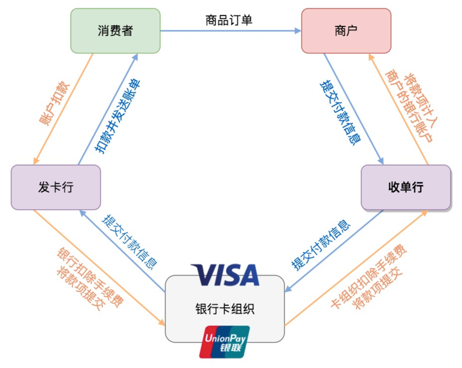

3 关键问题：如何落地
在相当长一段时间内，商户都很直接难接受加密货币支付：一方面这需要非常深的知识积累，大多数商户没能力也没动力去学习；另一方面加密货币币值波动非常大，收来的款项无法纳入商户的成本收益模型中。因此在支付方案中，如何实时将加密货币转为法币与商户结算是一个非常关键的问题。
首先是加密货币兑换。目前加密货币到法币的兑换主要是由交易所完成的，但是交易所是一个完全中心化的机构，资金被盗风险、交易时效性差都制约了将直接对接交易所API作为支付方案一环的可行性。一些解决方案采用了对接交易所的同时自建资金池的方式进行优化，但这也带来了新的问题，比如资金池的容量问题和币值波动风险问题等。只有高效、安全地将加密货币兑换成法币，才能满足消费级支付场景的需要。
另一方面，也是最重要的一环：将法币结算给商户。虽然这件事情每天都在发生，但实际上一笔法币的结算需要很多支付机构之间互相协调配合，这其中商户承担了全部的费用（国际上平均手续费为交易金额的2%~3%）。下图简要描述了各机构的协作过程：

在支付行业中，「收单行」其实代表了一个生态，主要由收单银行、收单机构、服务商三者构成。收单银行就是指在商户那里放置POS机的银行；收单机构指持有第三方支付牌照的专业公司，如易宝支付、微信支付、支付宝等，他们直接跟银行合作，完成快捷支付等协议的对接以及风控等工作；服务提供商指协助收单方对商户提供软硬件系统的服务公司，如哆啦宝，主要涉及跟消费者和商户直接交互的软件系统，以及维护商户关系等。
从上图可见最简单的方式是跟银行卡组织合作，毕竟卡组织耕耘多年，已经在全球建立了与很多发卡行、收单行的合作，但加密货币支付的无国界属性跟卡组织的主要收入——跨境结算业务在一定程度上有直接竞争关系，卡组织不可能止支持加密货币发展壮大。不久前，Visa和MasterCard先后宣布停止旗下所有加密货币联名卡的功能，还分别发表言论抨击比特币，表示不会承认比特币的货币属性，也不提供比特币支付和兑换的服务。由于这些联名卡从几年前就开始提供，现有的大多数加密货币支付产品方案都采用了跟卡组织对接的方式完成支付落地，如今他们的联名卡都已无法继续使用。
将支付落地方案完全依托于卡组织的解决方案是不稳定、不长久的，而且也是不可行的。
LITEX团队具有深厚的支付行业背景，未来将深入全球支付行业生态，由团队推动世界各国当地收单机构加入生态，在更深层次上做到加密货币支付落地的安全稳定，从而可以跟各银行卡组织进行名正言顺地竞争，并在加密货币大流通时代到来之时将他们淘汰出局。